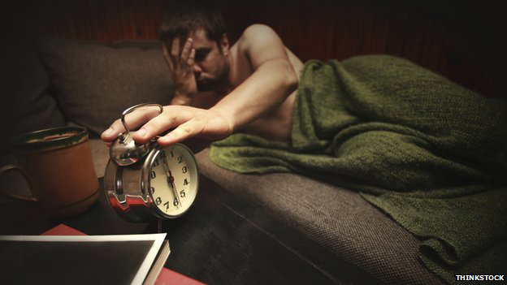
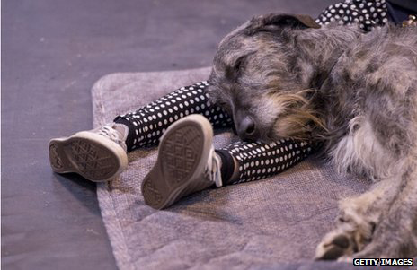

Engelsk B
kl. 09.00-14.00
The Importance of Sleep
I: Is your smartphone ruining your sleep?
II: How much can an extra hour's sleep change you?
Is your smartphone ruining your sleep?
New technology such as smartphones and tablets could be affecting how much sleep people get, a survey suggests.
More than three quarters of those surveyed use devices with screens before going to sleep. The blue light they emit disrupts the body's natural processes.
Professor Richard Wiseman, a psychologist at the University of Hertfordshire who was behind the survey, says six out of ten people are now getting less than seven hours' sleep a night.
|
How much can an extra hour's sleep change you?
 The average Briton gets six-and-a-half hours' sleep a night, according to the Sleep Council. Michael
Mosley took part in an unusual experiment to see if this is enough. It has been known for some time that the amount of sleep people get has, on average, declined over the years. This has happened for a whole range of reasons, not least because we live in a culture where people are encouraged to think of sleep as a luxury - something you can easily cut back on. After all, that's what caffeine is for - to jolt you 5
back into life. But while the average amount of sleep we are getting has fallen,
rates of obesity and diabetes have soared. Could the two be connected? We wanted to see what the effect would be of increasing average sleep by just one hour. So we asked seven volunteers, who normally sleep anywhere between six and nine hours, to be studied at the University of Surrey's Sleep Research Centre. 10
The volunteers were randomly allocated to two groups. One group was asked to sleep for six-and-a-halfhours a night, the other got seven-and-a-half hours. After a week the researchers took blood tests and the volunteers were asked to switch sleep patterns. The group that had been sleeping six-and-a-half hours got an extra hour, the other group slept an hour less. While we were waiting to see what effect this would have, I went to the John Radcliffe hospital in Oxford to 15 learn more about what actually happens when we sleep.
In the Sleep Centre, they fitted me up with a portable electro-encephalograph, a device that measures brain wave activity. Then, feeling slightly ridiculous, I went home and had my seven-and-a-half hours of sleep. The following day I went to discuss what had happened inside my head during the night with Dr Katharina 20 Wulff.
The first thing she pointed out was that I had very rapidly fallen into a state of deep sleep. Deep sleep sounds restful, but during it our brains are actually working hard. One of the main things the brain is doing is moving memories from short-term storage into long-term storage, allowing us more short- term memory space for the next day. If you don't get adequate deep sleep then these memories will be 25 lost.
You might think: "I'll cut back during the week and then make up for it at the weekend." Unfortunately it doesn't work like that, because memories need to be consolidated within 24 hours of being formed.  Since deep sleep is so important for consolidating memories it is a good idea if you are revising or perhaps taking an exam to make sure that you're getting a reasonable night's sleep. In one study, people who failed 30 to do so did 40% worse than their contemporaries.
Deep sleep only lasts for a few hours. My electrode results showed that during the night my brain went through multiple phases of another kind of activity, called REM sleep. "This is the phase when you are usually paralysed - so you can't move," Wulff explained. But the eye muscles are not paralysed, and that's why it's called rapid eye movement sleep." 35 During REM sleep an extraordinary thing happens. One of the stress-related chemicals in the brain,
noradrenalin, is switched off. It's the only time, day or night, this happens. It allows us to remain calm while our brains reprocess all the experiences of the day, helping us come to terms with particularly emotional events. We get more REM sleep in the last half of the night. Which means that if you are woken unexpectedly, 40 your brain may not have dealt with all your emotions - which could leave you stressed and anxious.
Drinking alcohol late at night is not a good idea as it reduces your REM sleep while it's being processed in your body. Back at the University of Surrey our sleep volunteers had finished their second week of the experiment. What we wanted to see was the effect of switching from six-and-a-half hours to seven-and-a-half hours, or 45 vice versa, would have on our volunteers.
Computer tests revealed that most of them struggled with mental agility tasks when they had less sleep, but the most interesting results came from the blood tests that were run. Dr Simon Archer and his team at Surrey University were particularly interested in looking at the genes that were switched on or off in our volunteers by changes in the amount that we had made them sleep. 50 "We found that overall there were around 500 genes that were affected," Archer explained. "Some which were going up, and some which were going down." What they discovered is that when the volunteers cut back from seven-and-a-half to six-and-a-half hours' sleep a night, genes that are associated with processes like inflammation, immune response and response to stress became more active. The team also saw increases in the activity of genes associated with 55
diabetes and risk of cancer. The reverse happened when the volunteers added an hour of sleep.
So the clear message from this experiment was that if you are getting less than seven hours' sleep a night and can alter your sleep habits, even just a little bit, it could make you healthier. "Have a lie-in, it will do you good" - that's the kind of health message that doesn't come along very often. |
SOURCES
I: Is your smartphone ruining your sleep?
BBC News
5 April 2014
URL: http://www.bbc.com/news/health-26899454
II: How much can an extra hour’s sleep change you?
BBC News
9 October 2013
URL:http://www.bbc.com/news/magazine-24444634
ASSIGNMENTS
Complete both assignments (A+B)
A: Summary
Write a summary of the video, ‘Is your smartphone ruining your sleep?’
(About 200 words)
B: Discussion
(…) “we live in a culture where people are encouraged to think of sleep as a luxury - something you can easily cut back on.”
(ll. 3-4 in the text)
Discuss the importance of sleep and how new technology such as smartphones and tablets may affect how much sleep people get.
What are the future implications of the current development?
Include a comment on the quotation and base your discussion on both the text and the video.
(Minimum 600 words)